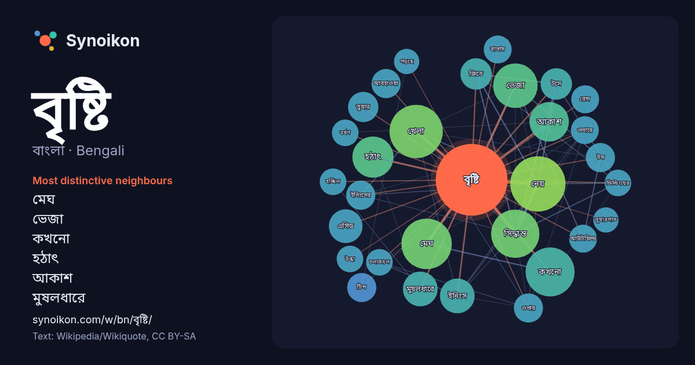

বাংলা · Bengali · word of the day list
বৃষ্টি
“rain” · The words found around it in 840 instances from Bengali Wikipedia, Wikiquote.

Most distinctive neighbours
- মেঘ 33×
- ভেজা 26×
- কখনো 20×
- হঠাৎ 19×
- আকাশ 19×
- মুষলধারে 18×
- খেলা 16×
- নেয় 15×
- এসিড 15×
- টসে 15×
- সিদ্ধান্ত 14×
- তুষার 13×
- টস 13×
- টিপ 13×
- জিতে 12×
- আউটফিল্ড 12×
- ইনিংসের 12×
- রোদ 11×
- ইনিংস 11×
- আবহাওয়া 11×
× = how many times more often than in general Bengali Wikipedia text.
Most frequent neighbours
- কারণে 51
- নেয় 43
- খেলা 40
- নামে 37
- মেঘ 36
- কখনো 34
- সময় 34
- সিদ্ধান্ত 33
- ভেজা 28
- পড়ে 24
- হঠাৎ 24
- আকাশ 22
- আসে 17
- ইনিংস 17
- মুষলধারে 17
- এসিড 16
- জিতে 14
- টসে 14
- তুষার 13
- আঘাত 12
In context
- যথেষ্ট পরিমাণে ভারী হলে তা পৃথিবীর বুকে ঝরে পড়ে - একেই বলে বৃষ্টি। বিশ্বের অধিকাংশ অঞ্চলে বৃষ্টি সুপেয় জলের বড় উৎস। বিচিত্র জৈবব্যবস্থাকে বাঁচিয়ে রাখতে Wikipedia snippets · বৃষ্টি
- অথবা তা মাটিতে পতিত হওয়ার আগেই মিলিয়ে যায়। উল্কা বৃষ্টি প্রধানত রাতের আকাশে দেখা যায়। উল্কা বৃষ্টি হয় কারণ মহাকাশে যখন কোনো ধুমকেতুর বিস্ফোরণ হয় তখন Wikipedia snippets · উল্কা বৃষ্টি
- অ্যাসিড বৃষ্টি বা অম্ল বৃষ্টি হলো একধরণের বৃষ্টিপাত যেক্ষেত্রে পানি অম্লীয় প্রকৃতির হয়। এক্ষেত্রে পানির পি.এইচ ৭ এর চেয়ে কম হয়ে থাকে। এটি এমন এক ধরনের Wikipedia snippets · অ্যাসিড বৃষ্টি
- হঠাৎ বৃষ্টি ১৯৯৮ সালে মুক্তিপ্রাপ্ত ভারত-বাংলাদেশ যৌথ প্রযোজনায় একটি বাংলা ভাষার প্রণয়ধর্মী চলচ্চিত্র। ছবিটি পরিচালনা করেছেন বাসু চ্যাটার্জী। প্রধান Wikipedia snippets · হঠাৎ বৃষ্টি
- তানিয়া বৃষ্টি। Manob Kantha। ১৯ সেপ্টেম্বর ২০১৬। ২ ডিসেম্বর ২০১৬ তারিখে মূল থেকে আর্কাইভকৃত। সংগ্রহের তারিখ ৩০ নভেম্বর ২০১৬। অপেক্ষায় তানিয়া বৃষ্টি। Bhorer Wikipedia snippets · তানিয়া বৃষ্টি
- মেঘভাঙা বৃষ্টি হলো এমন এক ধরনের আবহাওয়া ঘটনা যেখানে অতি স্বল্প সময়ে প্রচণ্ড পরিমাণ বৃষ্টি হয়। অনেক সময় এর সঙ্গে শিলা (হিমকণা) ও বজ্রপাতও দেখা যায়। Wikipedia snippets · মেঘভাঙা বৃষ্টি
- হলুদ বৃষ্টি হল ১৯৮১ সালে গঠিত একটি রাজনৈতিক ঘটনার বিষয়, যেখানে মার্কিন রাষ্ট্রের পররাষ্ট্রমন্ত্রী আলেকজান্ডার হেগ সোভিয়েত ইউনিয়ন কে অভিযুক্ত করে টি-২ Wikipedia snippets · হলুদ বৃষ্টি
- with Moushumi Arts & Entertainment, accessed: 05 June, 2011 ইন্টারনেট মুভি ডেটাবেজে কখনো মেঘ কখনো বৃষ্টি (ইংরেজি) রটেন টম্যাটোসে কখনো মেঘ কখনো বৃষ্টি Wikipedia snippets · কখনো মেঘ কখনো বৃষ্টি
More Bengali words
- অরণ্য
- আয়না
- ইতিহাস
- ঈশ্বর
- কাজ
- কুকুর
- ক্ষমতা
- খাদ্য
- গান
- গ্রীষ্ম
- ঘড়ি
- ঘণ্টা
- ঘোড়া
- ছায়া
- জননী
- জলবায়ু
- জীবন
- ঝড়
- টাকা
- ট্রেন
- দারুচিনি
- দ্বীপ
- নক্ষত্র
- নীরবতা
- পরিবার
- পানি
- পাহাড়
- প্রকৃতি
- বাগান
- বিজ্ঞান
- বিড়াল
- ভাষা
- মধু
- মরুভূমি
- মানচিত্র
- মৃত্যু
- রাস্তা
- রুটি
- লবণ
- শরৎ
- শহর
- শিল্প
- শীত
- সত্য
- সময়
- সেতু
- সোনা
- স্বাস্থ্য
- হৃদয়
Precomputed on 2026-10-09 with default settings (±5 words, medium corpus). The interactive map can refresh it with live data.